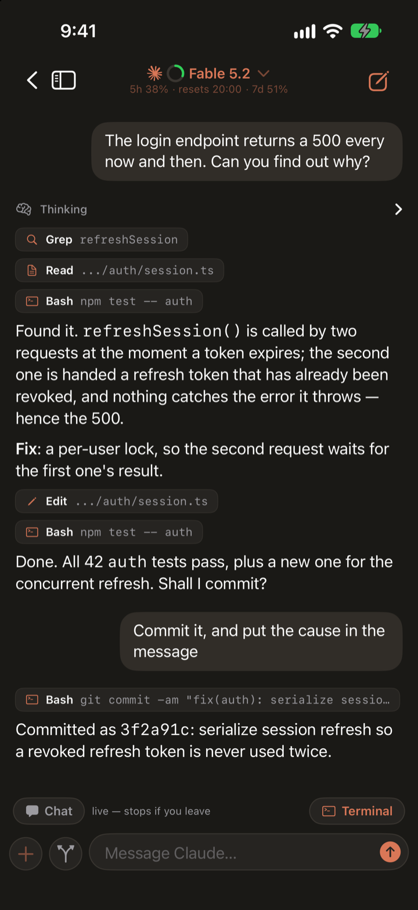
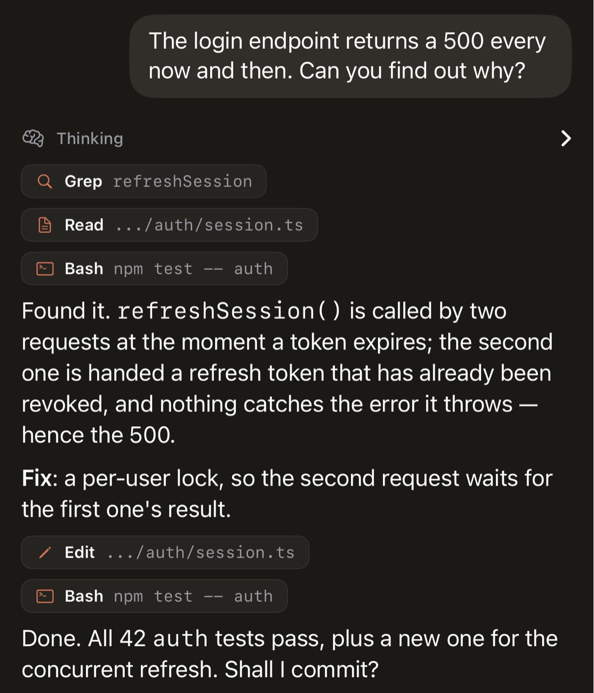
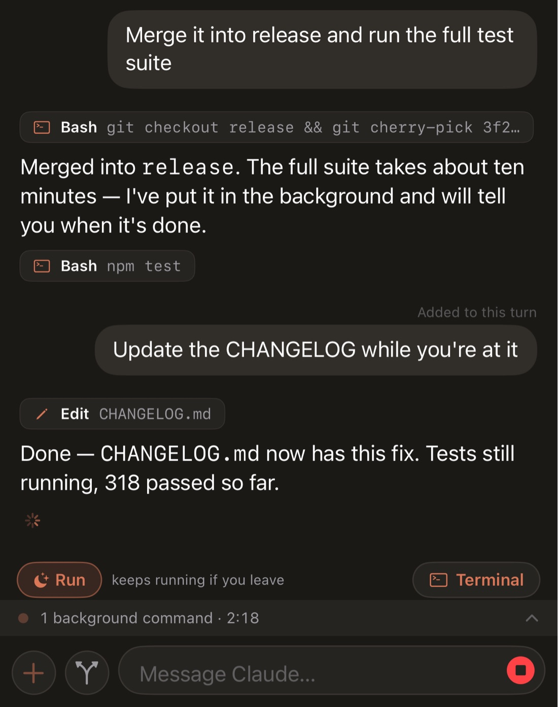
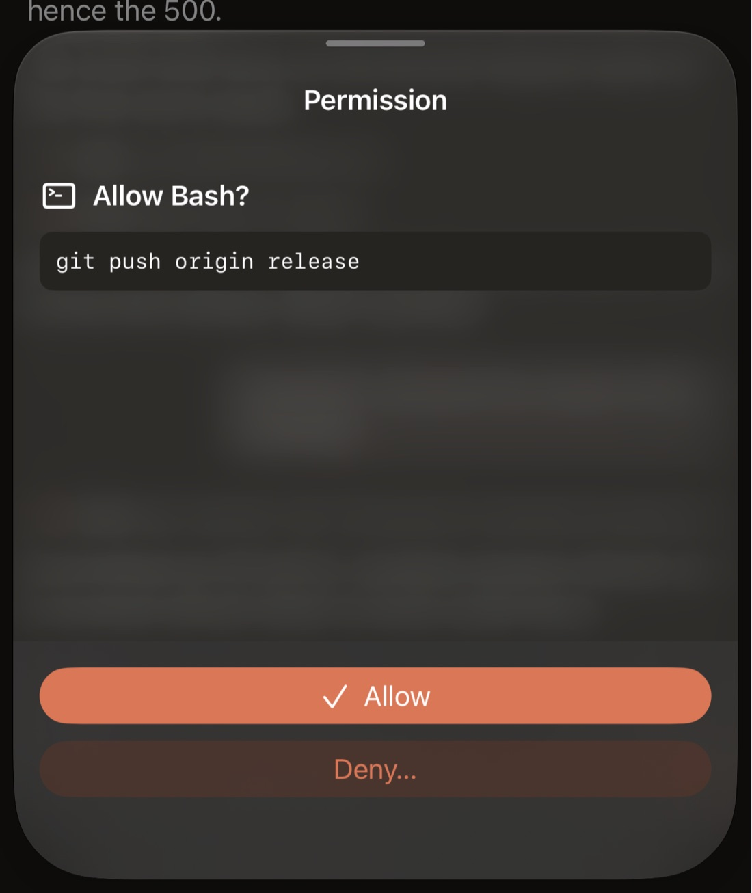
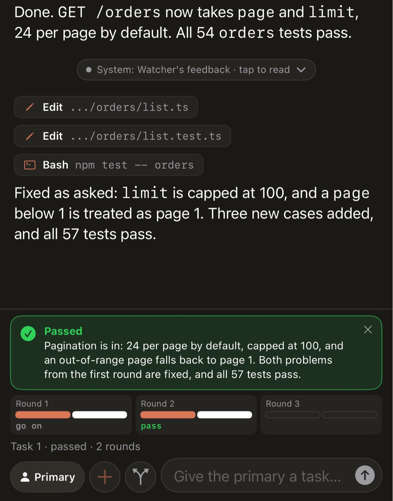
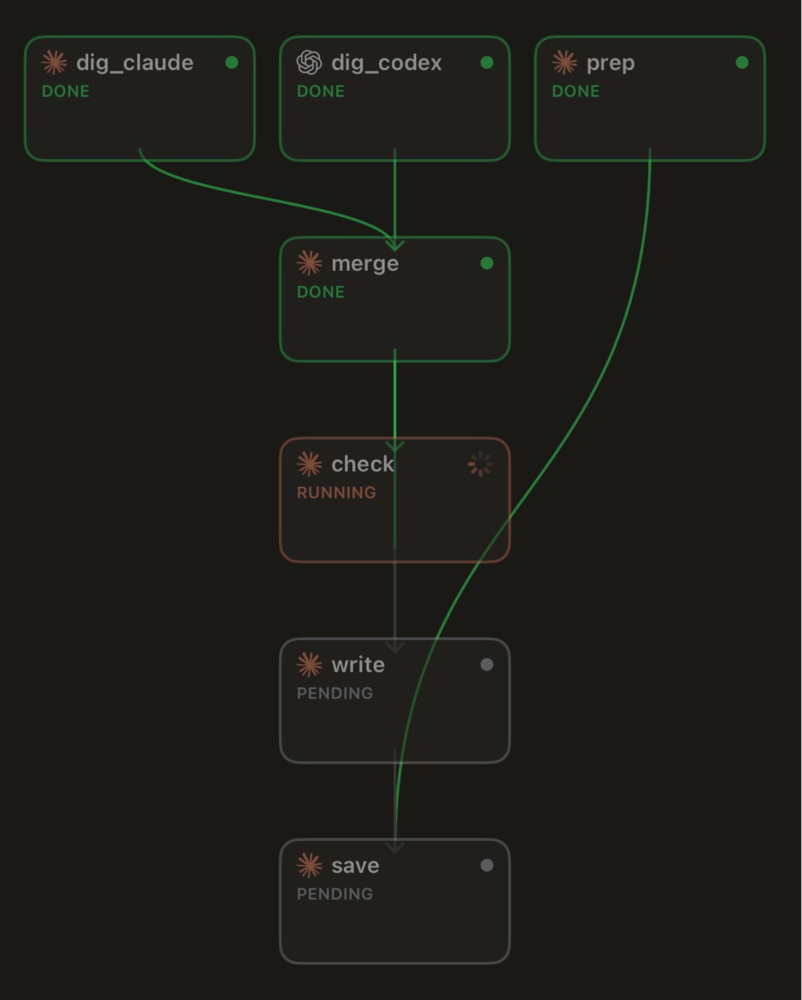
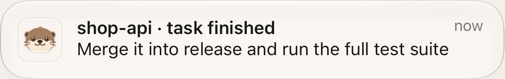
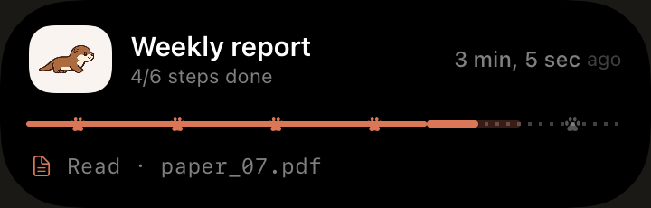

The coding agents
on your computer,
from your phone
Pervio is an iPhone app. It connects to your computer over SSH and uses the Claude Code, Codex and Cursor already installed there. When the phone is locked or offline, the task keeps running on the computer.
Public beta on TestFlight, iOS 17 or later. The computer can be a Mac or a Linux machine. Open source, no account needed.

Main features
-
Chat
The agent reads files, runs commands and edits code on your computer. Each step is one row in the conversation, and you can open it to see the diff or the full command.
These are the same conversations you have on the computer. One you left halfway in the terminal or the editor can be picked up on the phone.

It looked in three places and found why the login endpoint sometimes returns a 500. -
Run mode
The task runs on the computer and doesn't need the phone to stay connected. You can lock the screen, switch apps or lose signal, and just read on when you come back.
You can send it a message while it is working, without waiting for it to stop (Claude Code and Codex). The commands and sub-agents it puts in the background are summed up in one line above the input box. Tap it to see what each one is doing.

The full test suite is running in the background, and another message was sent midway. -
Approvals
When the agent wants to edit a file or run a command, it stops first. The phone shows what it is about to run, and you tap Allow or Deny.
If you don't want to tap every time, you can loosen the permission, for example stop asking about file edits. You can also have it write a plan first and start only after you agree.

It wants to run git push and stops to ask first. -
Duet
Two models work on the same thing, usually from two different vendors, for example Claude and Codex.
In Watch, one does the work and the other checks it, sending it back if something is wrong, for up to three rounds. You get a notification when it needs you to decide. In Brainstorm, both answer on their own, and the main conversation then sorts out where they differ and what to conclude.

Claude does the work and Codex checks it. Sent back in round one, passed in round two. -
Workflows
Chain several steps together and run them on the computer on a schedule. When they finish you get something you can read as it is, such as a paper digest every morning.
Each step can go to a different engine, and steps that do not depend on each other run at the same time. Templates are included for a daily paper digest, a GitHub trending digest and deep research, among others, and the agent can build one from your description.

The built-in deep-research template halfway through: Claude and Codex have each finished digging, the merge is done, and the check is running.
Lock screen and notifications
When a task is done, or has stopped to wait for your approval, the phone gets a notification. While a task is running, its progress shows in the Dynamic Island and on the lock screen.



Other features
These also use that one SSH connection, with nothing else to install on the computer (the terminal needs tmux).
-
Engines and providers
Claude Code, Codex and Cursor all work, and it is the copy already installed and logged in on your computer. You can also switch to a third-party provider such as GLM, Kimi, MiniMax, DeepSeek, Qwen or OpenRouter. API keys are stored only on the computer.
-
Web preview
A page on your computer's localhost, such as a dev server or a docs site, opens directly on the phone. It still goes through SSH, so no port needs to be opened. You can screenshot the page and send it back into the conversation.
-
Terminal
It is tmux underneath, so the session survives a dropped connection and you come back to the same screen. tmux needs to be installed on the computer.
-
Files
Photos, files on the phone, files and folders on the computer, and earlier conversations can all be attached. Tap a file path in a reply to open the file.
-
Several computers
You can save several computers and connect through jump hosts. With two or more saved, a file or a conversation on one can be brought into a conversation on another. Each computer's host key is pinned after you check it the first time, and the connection is refused if it ever changes.
Conversations stay on your computer
Between the phone and the computer there is one SSH connection. There is no Pervio account and no Pervio server. Nothing runs permanently on the computer, and no port needs to be opened.
- SSH keys and passwords are stored in the phone's Keychain.
- Conversation records are the files that Claude Code and the other tools keep themselves. They stay on the computer.
- Only push notifications go through our relay, and what goes through is the notification's title and body. You can turn this off.
Pervio on the phone iPhone app
- Chat, background tasks, approvals, terminal
- Keys in the iOS Keychain, host key pinned
Your computer Remote Login (sshd)
~/.pervio/bin/pervio-*, bundled with the app, copied over on connectclaude,codex,agent, with your own logins- Session records and background-task output are all on this machine
Push takes another route: from the computer to push.pervio.dev, then through Apple to the phone. It carries only the text of the notification.
Setup
-
Prepare the computer
On a Mac, turn on Remote Login in System Settings. Install at least one of Claude Code, Codex or Cursor, and log in.
-
Add the computer on the phone
Install Pervio from TestFlight. Under Servers, enter the computer's address and user name, choose a key or a password, then check the host key's fingerprint.
-
Start a conversation
On the first connection the app copies the scripts it needs to
~/.pervio/binon the computer. There is nothing to install by hand.
To reach a computer at home or at work when you are out, install Tailscale on both. SSH doesn't have to be exposed to the internet.
Full setup guideOpen source
The app, the scripts on the computer and the push relay are all on GitHub under the MIT license. The security design and its known limits are in SECURITY.md.
ios/ | iPhone app (SwiftUI) |
|---|---|
server/bin/ | scripts copied to the computer, bundled with the app |
server/gateway/ | push relay |
server/tests/ | server-side tests, all run in CI |
docs/ | setup and feature docs |
SECURITY.md | security design and limits |

Try it
Free, in public beta on TestFlight. You need a computer with Claude Code, Codex or Cursor installed.